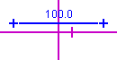
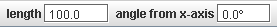
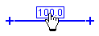
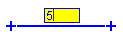
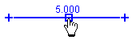
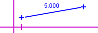
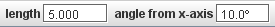
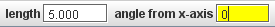
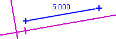
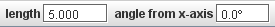

Merilna
palica

Merilna
palica
Merilna palica je privzeto orodje za kalibracijo video merila--to pomeni razmerje svetovne razdalje v metrih (ali kakšni drugi dolžinski enoti) v primeri z razdaljo na med dvema točkama na sliki, merjeno v pikslih. Za lažjo kalibracijo ina palica fiksno (nastavljivo) dolžino v svetovnih enotah, vendar spremenljivo dolžino v pikslih. V izpisu in na orodni vrstici je podana velikost v svetovnih enotah.
Merilno palico lahko uporabljamo tudi za popravek nagiba video slike.
Ker je merilna palica sled, ima svoj menu sledi , ki je dostopen v menuju o sledeh v vrstici z menuji, lahko pa tudi kliknemo z desnim mišjim gumbom v glavnem pogledu z videom.
1. Prikaz in uporaba merilne palice
Kliknemo na puščico na gumbu za kalibracijo na orodni vrstici in iz seznama kalibracijskih orodij izberemo Merilno palicos. Ko je ta izbrana, jo lahko prikažemo ali skrijemo (skupaj z drugimi izbranimi kalibracijskimi orodji) s klikom na glavni del gumba.


V začetku je merilna palica postavljena rahlo nad sredino video slike, njena svetovna dolžina pa je določena s trenutnim merilom (tako, kot to velja za merilni trak). Svetovna dolžina in kot proti osi x st prikazana na orodni vrstici.

Če želimo svetovno dolžino spremeniti, kliknemo na izpis in vnesemo želeno dolžino v poljubnih enotah. Pri vnosu dolžine enot ne vpisujemo. Svetovno dolžino lahko vnesemo tudi v izpis dolžine na orodni vrstici.

Za spremembo dolžine v pikslih (in s tem spremembo merila) povlečemo enega od koncev palice . Če želimo premakniti celo palico brez spremembe merila, vlečemo njeno sredino.
2. Kalibracija
videa
Video kalibriramo tako, da najprej povlečemo konca merilne palice na neko video značilnost znane dolžine (na primer na meter dolgo palico). Nato kliknemo na izpis in vnesemo znano dolžino (brez navedbe enot). Spodnje slike kažejo primer uporabe merilne palice v metrih z uporabo video slike, na kateri je plastična cev z belimi trakovi v razmakih po 10 cm.

1. Vlečemo konce neumerjene palice na želene položaje na sliki

2. Kliknemo na izpis in ga tako izberemo

3. Vpišemo znano razdaljo ( v našem primeru 0.3, saj merimo v metrih)

4. Kalibracija je končana
Merilna palica kaže na orodni vrstici tudi kot relativno na os +x-axis. Z nastavitvijo tega kota lahko popravimo nagib kamere pri snemanju videa.

Nagib popravimo tako, da povlečemo konca kalibracijske palice tako, da je vzporedna z video značilnostjo, za katero vemo, da je v resničnem svetu vodoravna. Nato vnesemo v polje s kotom kot nič. To bo zavrtelo os +x na pravo vodoravnico. (Opomba: isti postopek lahko uporabimo za nastavljanje osi +x na poljuben znan kot.)


4. Sproščanje položaja
Privzeto ima merilna palica fiksiran položaj--to pomeni, da je na vseh sličicah njen položaj enak. Opcijo Fiksen položaj lahko razkljukamo v njenem menuju sledi. S tem bomo lahko položaj merilne palice na posameznih sličicah spreminjali.
Opomba: sprostitev položaja merilne palice ni isto kot sprostitev merila koordinatnega sistema.
5. Zaklepanje merilne palice
Zaklepanje merilne palice preprečuje kakršnokoli spreminjanje merila. Palico zaklenemo z vklopom lastnosti Zaklenjeno v njenem menuju sledi.